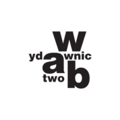

Współpraca
FMZ x Magnum Magnum inspiruje przyjemnością, a my wyjaśniamy jaki jest wpływ przyjemności na dobrostan człowieka

Magnum inspiruje przyjemnością
Latem 2024 roku marka Magnum razem z siecią Żabka zapytała: jak brzmiałyby polskie przysłowia, gdyby w naszym życiu było więcej przyjemności? W kampanii „Magnum Inspiruje Przyjemnością” znane powiedzenia zyskały nowe, pozytywne wersje – zachęcające do zatrzymania się i docenienia drobnych, codziennych radości.
Do kampanii Magnum zaprosiło Fundację Można Zwariować. Razem pokazaliśmy, że przyjemność to nie nagroda, na którą trzeba zasłużyć, ale ważna część dbania o zdrowie psychiczne.
Przyjemność a dobrostan
W ramach współpracy powstały dwa odcinki podcastu Można Zwariować o codziennych przyjemnościach, w których ekspertki i eksperci opowiadają o wpływie przyjemności na dobrostan psychiczny człowieka.
Jak często pozwalamy sobie na przyjemność? Czy trzeba na nią zasłużyć, czy raczej warto dawać ją sobie na co dzień? W odcinku 138. Różne wymiary przyjemności rozmawiamy z Karoliną Sobańską – podcasterką i ambasadorką dobrego życia – o tym, czego o przyjemności uczą ją podróże, rozmowy z gośćmi i codzienne rytuały.
W odcinku 140. Jak odnajdywać przyjemność w codzienności? Ania i Cleo zastanawiają się, jak drobne przyjemności wpływają na to, jak patrzymy na świat, i podsumowują najciekawsze odpowiedzi nadesłane w konkursie kampanii Magnum Inspiruje Przyjemnością.
Wydarzenie
19 czerwca 2024 roku w Warszawie odbył się panel dyskusyjny „Wpływ drobnych przyjemności na dobrostan człowieka”, poprowadzony przez Annę Cyklińską z Fundacji Można Zwariować. Wzięli w nim udział Karolina Sobańska – podcasterka, dziennikarka, smakoszka i podróżniczka, Kamila Kalińczak – dziennikarka radiowa i telewizyjna, lektorka i trenerka wystąpień publicznych, oraz dr n. med. Robert Kowalczyk – psycholog, psychoterapeuta i seksuolog.
Kulminacyjnym momentem wydarzenia było przekazanie przez markę Magnum 100 000 złotych darowizny na cele statutowe Fundacji.